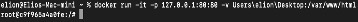

To take the right steps towards mastering modern web development, it is important to have some basic knowledge of how to navigate the command line, or terminal if you are using MacOS. In order to do that, let us introduce you to the basics of Linux. Linux is an operating system that manages all of the hardware resources associated with your desktop or laptop. Basically, it manages all the communications between your software and hardware.
Linux is important in the context of this website because through Linux, we will teach you how to log into your Docker container from your command line or terminal. So, let us begin with some basic commands that you can use in your command line. To correctly identify how to enter a command line, we will be using a dollar sign ($) to signify the prompt. When applying the examples below, simply enter the command that follows a dollar sign.
username@devicename: - $
In some cases, you might see a percentage (%) sign instead of ($). This informs the user that they are
accessing the terminal as User X and from Device Y. When first opening the terminal, the terminal opens up
in your home folder. To identify and be sure of where your home folder is, you can enter:
$ pwd
This should return an address in the form of /Users/username. The above command will always tell you in what
folder you are. Pwd is short for “print working directory”. To navigate back to your home folder, you can
enter:
$ cd
This will always direct you back to the home folder. To navigate to another folder that is located on your
computer, type:
$ cd /Applications/Utilities
This will send you to the Utilities folder. However, if you are not sure of what folders are present under
your home folder, enter:
$ ls
“ls” will list the contents of the current directory. Adding “-l” to the above command will display your
folders in a list format. Adding “-a” will view all folders including hidden folders. Combining them and
adding “-la” to the above command will view all folders including hidden ones in a list form.
it means that Docker is running on your computer. To make sure that it is running correctly, run “docker run hello-world” to test your installation. This is what it should look like:
Next, run “docker pull ubuntu” in your command line window to download all the Docker images on your device. Then enter “docker images” to check existing Docker images on your computer.
Next, you will run the ubuntu image to start a Docker container, then log into this Ubuntu container:
$ docker run -it ubuntu:latest /bin/bash
The parameter “-it” of Docker brings you an interactive shell to communicate with the “virtual machine”. The command line will display a container ID as a response.
The container ID in this example is “c9f965a4a0fe”. Now that you have successfully logged into your container, you can install applications in the container. Update the system using “apt-get update”. Next, you can use “apt-get install” to install applications. You can install apache2 which is an http server that allows you to host a web server in a Docker container. To learn more about this, visit the How to Setup a Web Server on Docker? page. Furthermore, you can also install vim which is a text editor that allows you to edit files within the terminal along with many other applications.
Whenever you are done with your work, simply use command “exit” to exit the container and commit the container along with your changes that you just made to create a new Docker image. Check the container using “docker ps-a”. Then, create a new Docker image using:
$ docker commit c9f965a4a0fe ubuntu-my_container
“c9f965a4a0fe” will be the container ID and ubuntu-my_container is the name of the new Docker image. Now, if
you use “docker images” again, your new docker image will be listed. This should cover the basic steps of
how to use the command line and your terminal to log in to your Docker container.
pre code { background-color: #eee; border: 1px solid #999; display: block; padding: 20px; }